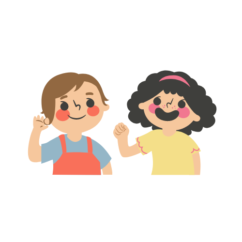
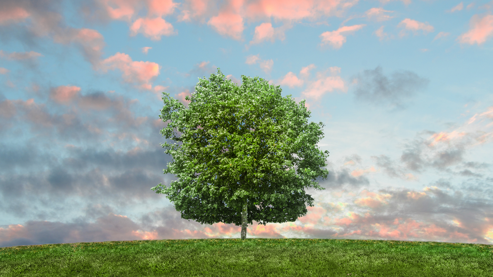

{% include "html/navbar.html" %}{% load static %}
<link rel="stylesheet" href="{%  static  'css/about.css'  %}">
</body>
<div class="wrapper">
    <div id="who">
        <div class="container">
            <div class="text">
                <h3>Chúng mình là ai?</h3>
                <p>Xin chào mọi người, chúng mình là nhóm sinh viên đến từ trường Đại học Công nghệ Thông tin - Đại học Quốc gia TP.HCM</p>
            </div>
            <div class="image">
                
            </div>
        </div>
    </div>
    <div id="what">
        <div class="container">
            <div class="image">
                
            </div>
            <div class="text">
                <h3>Vậy còn trang web này là gì?</h3>
                <p>Trang web này - <b>Replyronment</b> là đồ án môn học <b>Lập trình ứng dụng Web</b> của nhóm 13 tụi mình (lớp <b>NT208.M11.ANTT</b>) do thầy <b>Trần Tuấn Dũng</b> hướng dẫn</p>
            </div>
        </div>
    </div>

    <div id="how">
        <div class="container">
            <div class="title">
                <h3>Trang web này nói về gì vậy nhỉ?</h3>
                <p>Với tên website là <b>Replyronment</b>, chắc hẳn mọi người cũng đoán được ít nhiều mục đích của nó rồi đúng không?</p>
            </div>

            <div class="image">
                
            </div>

            <div class="text">
                <p>Đây là trang web lấy đề tài về môi trường, là một nơi trung gian giúp chúng mình chia sẻ kiến thức mà chúng mình có được trong quá trình thu thập và tìm hiểu về những tác nhân tác động tích cực cũng như
                    tiêu cực đến môi trường sống xung quanh. Hy vọng qua những thông tin này, chúng mình sẽ lan tỏa được thông điệp <b>“It’s time to reply to the environment!” - “Đã đến lúc đáp lời môi trường rồi đấy!”</b></p>
                <h4>Bạn sẽ tìm được gì ở nơi này?</h4>
                <p>Ở đây chúng mình đã tự viết cũng như sưu tầm được rất nhiều bài báo xoay quanh các đề tài thường gặp về môi trường như: biển đổi khí hậu, rác thải, cháy rừng, tuyên truyền bảo tồn các loại động vật quý
                    hiếm,... Nhằm nâng cao ý thức của mọi người về những biến đổi trong quá khứ, hiện tại hay tương lai mà có thể tác động rất lớn đến đời sống của các bạn. Các bạn nhớ tìm và đọc để ủng hộ tụi mình
                    nha. Các bạn cũng có thể để lại bình luận ở cuối mỗi bài viết nữa đó! Nên đừng quên cho chúng mình biết suy nghĩ của các bạn nữa nha!</p>
                <h4>Không chỉ dừng lại ở việc đọc...</h4>
                <p>Chúng mình cũng chuẩn bị những câu hỏi trắc nghiệm rất đơn giản nhưng không kém phần thú vị nhằm giúp các bạn ôn lại những kiến thức đã thu thập được từ cái bài viết mà các bạn đã đọc nè. Các bạn chỉ
                    cần chọn mục tiện ích, tìm đến phần giải trí và bắt đầu “chiến” thôi.</p>
                <h4>Đừng chỉ giữ kiến thức cho riêng mình!</h4>
                <p>Ngoài ra, chúng mình còn có một diễn đàn dành cho cộng đồng những “nhà hoạt động vì môi trường” nữa đó! Sau khi học tập và lĩnh hội được các kiến thức, nếu có bất kì câu hỏi nào thì đừng ngần ngại
                    mà đăng một bài lên diễn đàn nha. Các cao thủ ở đây sẽ giúp bạn cho dù vấn đề có khó khăn đến đâu! À mà không chỉ dùng để chia sẻ kiến thức, chúng mình tạo ra diễn đàn cũng nhằm mục đích tìm chủ
                    cho các bé thú nuôi bị bỏ rơi, hoặc giúp cho các chủ nuôi tìm nhà mới cho các “hoàng thượng” của mình. Vậy nên chúng mình cùng làm việc này với nhau để không có bé thú cưng nào bị bỏ rơi nha!</p>
            </div>

            <div class="go">
                <h3>Còn chần chờ gì nữa mà không cùng chúng mình bắt đầu ngay bây giờ!</h3>
                <p>Ý tưởng chính: <b>Mỹ Duyên, Minh Đức</b><br> Thiết kế giao diện: <b>Minh Đức</b><br> Thiết kế chức năng và vận hành chức năng: <b>Mỹ Duyên</b><br> Nguồn ảnh: <b>Canva, Alphacoder</b><br> Nguồn tin tức: <b>Cục kiểm soát môi trường</b></p>
            </div>
        </div>
    </div>
</div>
</div>
</body>
{% include "html/footer.html" %}